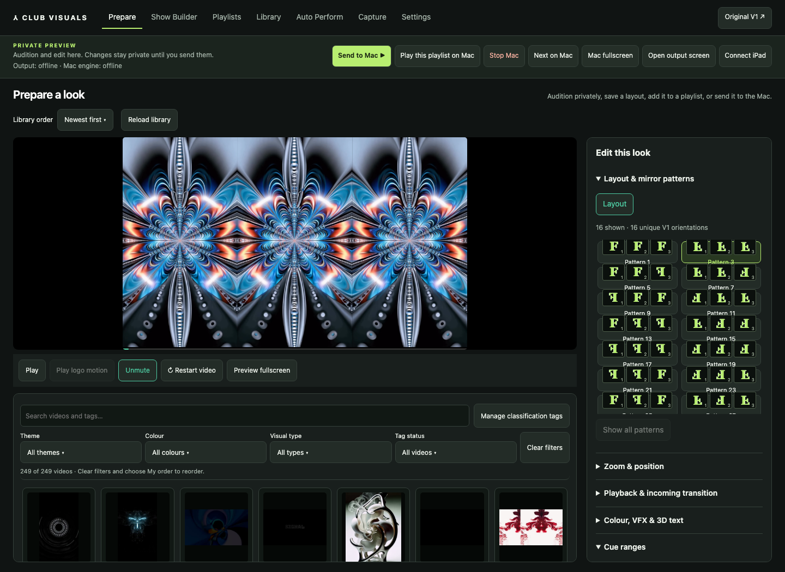
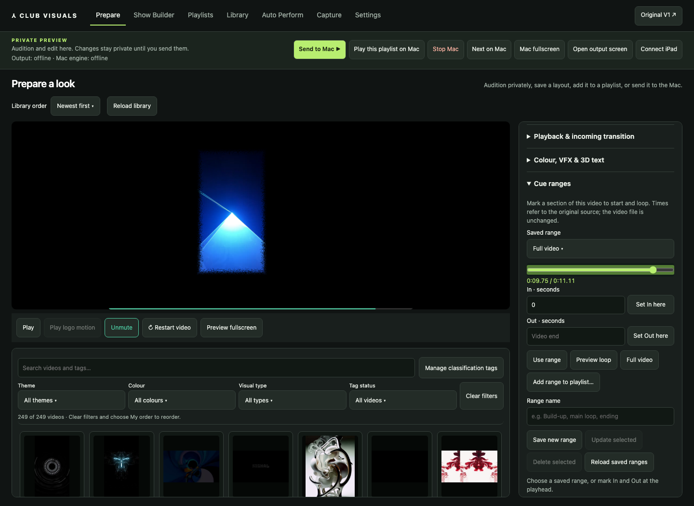

3. Prepare layouts, framing and cue ranges
Make one source work as a single image, mirrored grid or precisely bounded loop.


Choose the layout
Open Layout & mirror patterns. Choose Single, Dual (2×), 3×, 4×, 6× or 8×. Dual and triple use one row; 4× uses two columns and two rows; 6× uses three columns and two rows; 8× uses four columns and two rows. Tiles repeat the same decoded source with different crop and flip treatments; they are not independent video tracks.
Mirror patterns flip selected panels horizontally, vertically or both. The numbered F diagrams show the treatment. A vertically flipped F means that panel is upside down. Featured patterns can be chosen in Settings; Show all patterns reveals the rest. In the playlist inspector, All panels upright resets the selected section to no horizontal or vertical mirroring.
A finished MP4 can already contain multiple panels. Single shows that complete image; additional tiling repeats it. The showcase ripple and colour examples now use original footage and live effects, so their layout and effect parameters remain editable. Original rendered studies remain in the library as finished videos.
Zoom and position
Zoom runs from 0.25× to 4×. Below 1×, the image shrinks into black and its edges dissolve into a dust-like fade. Above 1×, the frame crops into the video. Position X/Y chooses the visible crop when enlarged and positions a smaller image in the black surround when reduced. Zero centres the framing.
A thin line between tiles can come from black pixels already present at a source video's edges. In the selected playlist section, try Zoom 1.02 and Pan X 0. The fine zoom step is 0.01. This trims those source borders for both preview and exported composition. Large outer black areas can instead come from aspect-ratio fitting or an intentional zoom-out; inspect the preview-frame aspect and the selected section before changing them.
Playback and saved looks
Use once-only playback, Loop or Bounce. Bounce alternates forward and reverse playback through the active source range. Speed changes video time independently of the logo's animation clock in Prepare. A named Saved layout stores the source's layout, pattern, framing, playback and cue range for reuse. Add current view in Playlists captures the prepared look into a playlist entry; remember to save the playlist afterwards.
Virtual source In/Out points


- Open Prepare → Cue ranges. Scrub the source to the desired beginning and mark In, or type its time in seconds.
- Mark or enter Out. Leave Out blank to use the natural video end.
- Choose Use range or Preview loop to check it.
- Give it a useful name and save it. Multiple named ranges can belong to one video.
- Use Add range to playlist, or select the named range in a playlist inspector.
In/Out are positions in the original video, not moments in the full playlist. A two-second range can fill a 32-second playlist slot by looping or bouncing. A seconds-based slot keeps its chosen show length. A loops-based slot derives its length from the source range, playback speed and loop mode.
Full video stops using a range without deleting saved ranges. Playlist entries copy their own range snapshots, so changing a named range later does not rewrite an existing performance. Replacing a playlist entry's source resets its old source In/Out. In Prepare, Restart video returns to the active range's In point; in Playlists, Restart clip moves the show playhead to the selected clip's start.